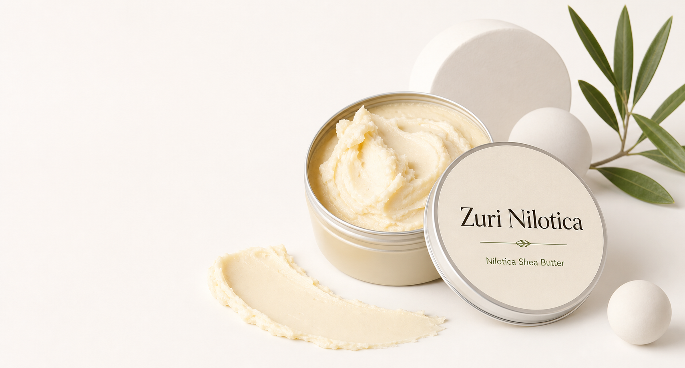

Origin
Sourced from Uganda's Nile Basin shea landscapes, where the Nilotica variety is valued for its naturally softer, silkier feel.
Pure Ugandan Nilotica Shea Butter

Zuri Nilotica - pure Ugandan Nilotica shea butter with a soft, creamy texture for daily skin and hair care.
Discover the CollectionOur Origin
In northern Uganda, Nilotica shea trees produce nuts used to make a naturally soft, creamy butter. It warms quickly in the palm, melts into skin, and works beautifully for simple daily care.
Zuri Nilotica brings that origin to your routine in its simplest form: pure shea butter, clearly sourced, easy to trust.
Explore SourcingSingle-origin. Cold-pressed. Naturally yours.
Sourced from Uganda's Nile Basin shea landscapes, where the Nilotica variety is valued for its naturally softer, silkier feel.
No fragrance, bleaching, petroleum, artificial color, or filler. Just one ingredient: Nilotica shea butter.
Behind every jar is the work of collecting, sorting, drying, storing, and preparing shea nuts with care.
Use it on dry skin, hands, heels, cuticles, lips, hair ends, and protective styles. A little goes a long way.
Zuri Nilotica keeps the story simple and honest. You get one ingredient, a naturally soft texture, and a clear Ugandan source. No confusing routine, no unnecessary extras, just shea butter made to be used every day.
What People Are Saying